一 环境搭建 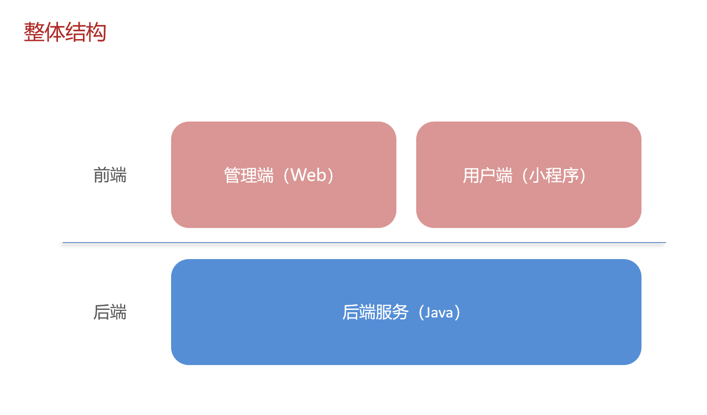
1.前端环境搭建 前端工程基于 nginx 运行
启动nginx 在nginx安装的文件夹内，双击 nginx.exe 即可启动 nginx 服务，访问端口号为 80
什么是nginx？ nginx 反向代理，就是将前端发送的动态请求 由 nginx 转发到后端服务器
位置 ：运行在你的服务器 上。职责 ：接收、调度、分发 请求。它是请求到达服务器后遇到的第一个“门卫”和“调度员”。它不处理核心业务逻辑（比如计算订单金额），但它决定把这个请求交给谁去处理，或者直接自己处理（比如直接返回一个图片文件）。
nginx 反向代理的好处 •提高访问速度
•进行负载均衡
•保证后端服务安全
所谓负载均衡 ,就是把大量的请求按照我们指定的方式均衡的分配给集群中的每台服务器
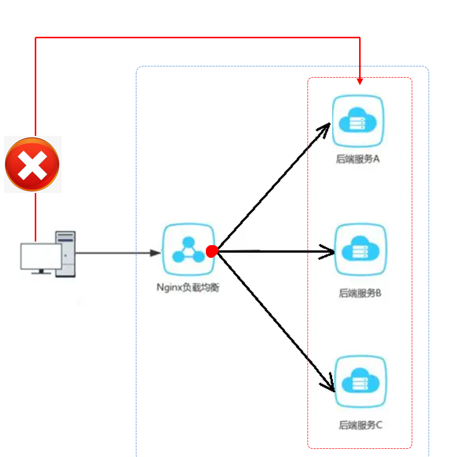
nginx 反向代理的配置方式 server{ listen 80 ; server_name localhost; location /api/ { proxy_pass http: } }
**listen 80;**监听80端口
逐行详解
定义一个虚拟服务器 ：Nginx 可以同时托管多个网站（虚拟主机），每个 server {} 块就是一个网站的配置。
监听端口 ：这个虚拟服务器会监听来自 80 端口 的 HTTP 请求（80 是 HTTP 协议的默认端口）。
服务器名称 ：这个虚拟服务器对应的域名是 localhost。当你在浏览器里访问 http://localhost 时，就会由这个 server 块来处理。
位置块 ：这是最核心的配置。它定义了一个 URL 路径匹配规则 。所有以 /api/ 开头的请求（例如 http://localhost/api/employee/login），都会进入这个 location 块内的逻辑。
proxy_pass http://localhost:8080/admin/;
反向代理指令 ：这是实现转发的关键命令。
它告诉 Nginx，对于匹配到的请求，不要自己处理，而是将其 转发（代理） 到指定的地址。
http://localhost:8080/admin/ 是 目标地址 。
nginx 负载均衡的配置方式 upstream webservers{ server 192.168 .100 .128 :8080 ; server 192.168 .100 .129 :8080 ; } server{ listen 80 ; server_name localhost; location /api/ { proxy_pass http: } }
1. upstream 块 - 定义服务器池（后端集群）
upstream webservers { server 192.168.100.128:8080; server 192.168.100.129:8080; }
upstream webservers {}webservers 的上游服务器组（也叫集群或服务器池）。server 192.168.100.128:8080;192.168.100.128，端口是 8080。server 192.168.100.129:8080;192.168.100.129，端口是 8080。
Nginx 默认的负载均衡策略是轮询 ，也就是说，第一个请求发给 128，第二个请求发给 129，第三个又发给 128，以此类推。
2. location 块 - 流量分发
location /api/ { proxy_pass http://webservers/admin/; #负载均衡 }
关键变化在这里：proxy_pass 的目标不再是单一的服务器地址，而是指向了我们定义的 upstream 池 http://webservers。
这意味着，所有匹配到的请求都会被分发到 webservers 池中的服务器上。
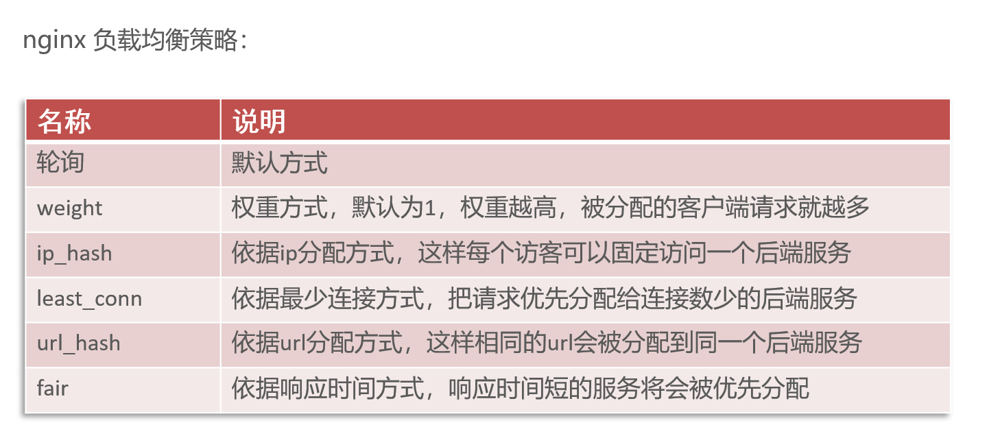
2.后端环境搭建 项目结构 后端工程基于 maven 进行项目构建，并且进行分模块开发
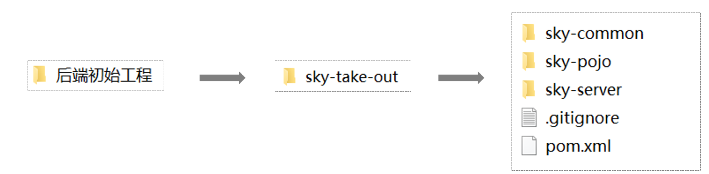
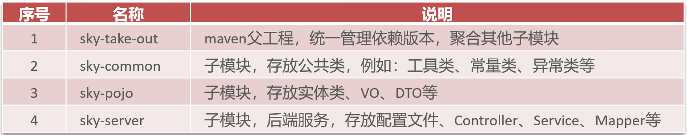
sky-common 子模块中存放的是一些公共类，可以供其他模块使用
sky-pojo 子模块中存放的是一些 entity、DTO、VO
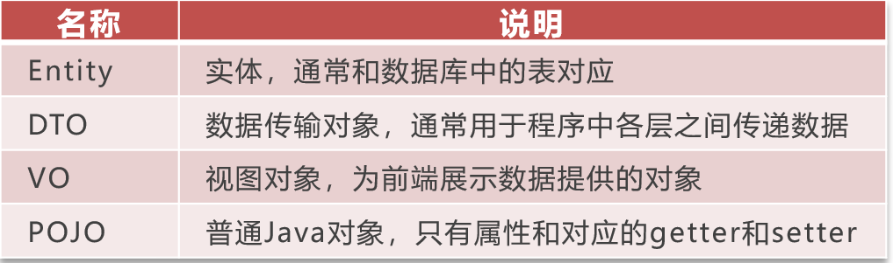
sky-server 子模块中存放的是 配置文件、配置类、拦截器、controller、service、mapper、启动类等
使用Git进行版本控制 .gitingore文件是git的相关文件，目的是忽略推送到服务器的文件或文件夹
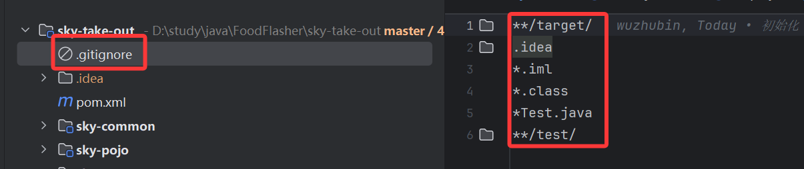
还没有被git版本控制的项目可以在idea配置，具体操作是上方操作菜单点击VSC，点击创建git仓库，最后在弹出窗中选择项目
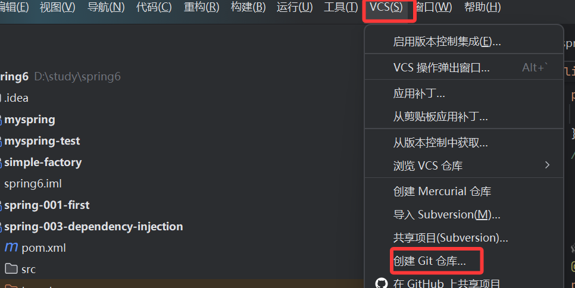
之后就可以测试提交，注意第一次提交会提交到本地仓库
推送就是要推送到远程仓库，第一次会提示你配置远程仓库信息
核心概念总结
动作
作用域
描述
影响
类比
commit本地 将暂存区 的快照永久记录到本地仓库 的历史中。
只更新你自己电脑上的 Git 仓库。团队其他成员看不到你的这次提交。
保存到本地硬盘
push本地 → 远程 将本地仓库 中的新提交记录上传到远程仓库 （如 GitHub, Gitee）。
更新共享的远程仓库，团队其他成员可以通过 pull 获取你的更新。
上传到网盘/服务器
工作流程图示
一个标准的 Git 协作流程如下：
你的电脑 工作区 –(git add)–> 暂存区 –(git commit)–> 本地仓库 –(git push)–> 远程仓库
同事的电脑拉远程仓库代码 远程仓库 –(git fetch)–> 本地仓库 –(git checkout)–> 工作区
合并（Merge） ：“邀请别人的成果加入我的版本”
操作：我站在原地不动，把别人完成的新内容拉过来 ，和我当前的内容融合 在一起。如果内容有重叠（冲突），我需要手动调解。
结果：历史记录会留下一次“合并”的痕迹，标明两条线在这里汇合了。
变基（Rebase） ：“把我的工作挪到最新的成果之上”
操作：我先把我的工作暂时放到一边 ，然后把别人的新成果作为新的基础 ，最后我再把我的工作重新实施 在这个崭新的、最新的基础之上。
结果：历史记录看起来就像是我从一开始就是在最新的代码基础上进行工作的，一条直线，非常整洁。
比喻
合并 ：你正在拼A部分，同事拼好了B部分。你直接把同事拼好的B部分拿过来，和你的A部分对接在一起。如果对接不上（冲突），你就需要调整一下接口。
变基 ：你发现同事不仅拼好了B部分，还把你们共同的底座C也升级了。于是，你先把你的A部分拆下来，把升级后的新底座C换上去，然后再把你的A部分重新拼到新底座C上。
3.swagger接口文档 Knife4j使用方式 K nife4j 是为Java MVC框架集成Swagger生成Api文档的增强解决方案
<dependency > <groupId > com.github.xiaoymin</groupId > <artifactId > knife4j-spring-boot-starter</artifactId > <version > 3.0.2</version > </dependency >
WebMvcConfiguration 文件配置
1.在配置类中加入 knife4j 相关配置
2.设置静态资源映射，否则接口文档页面无法访问
@Configuration @Slf4j public class WebMvcConfiguration extends WebMvcConfigurationSupport { @Autowired private JwtTokenAdminInterceptor jwtTokenAdminInterceptor; @Override protected void addInterceptors (InterceptorRegistry registry) { log.info("开始注册自定义拦截器..." ); registry.addInterceptor(jwtTokenAdminInterceptor) .addPathPatterns("/admin/**" ) .excludePathPatterns("/admin/employee/login" ); } @Bean public Docket docket () { ApiInfo apiInfo = new ApiInfoBuilder () .title("苍穹外卖项目接口文档" ) .version("2.0" ) .description("苍穹外卖项目接口文档" ) .build(); Docket docket = new Docket (DocumentationType.SWAGGER_2) .apiInfo(apiInfo) .select() .apis(RequestHandlerSelectors.basePackage("com.sky.controller" )) .paths(PathSelectors.any()) .build(); return docket; } @Override protected void addResourceHandlers (ResourceHandlerRegistry registry) { registry.addResourceHandler("/doc.html" ).addResourceLocations("classpath:/META-INF/resources/" ); registry.addResourceHandler("/webjars/**" ).addResourceLocations("classpath:/META-INF/resources/webjars/" ); } }
常用注解
注解 说明
@Api
用在类上，例如Controller，表示对类的说明
@ApiModel
用在类上，例如entity、DTO、VO
@ApiModelProperty
用在属性上，描述属性信息
@ApiOperation
用在方法上，例如Controller的方法，说明方法的用途、作用
二 后台管理模块开发 员工管理 1.新增员工 业务代码
注意 ：当前端提交的数据和实体类中对应的属性差别较大时（也就是实体类中会有多余的属性），建议使用DTO来封装（DTO里的数据字段和前端提交的数据字段都能对应上）。
在EmployeeController中新建一个方法save，传入的参数是employeeDTO
首先编写如下代码，是网页端读入的字段数据，在这里传入employeeService对象。有2点注意事项：①前端传入的数据是json格式，要用@RequestBody注解转换为对象。②为了方便调试加一个log.info，花括号{}的内容在后面会被替换为employeeDTO的值。
@PostMapping @ApiOperation("新增员工") public Result save (@RequestBody EmployeeDTO employeeDTO) { log.info("新增员工：{}" ,employeeDTO); employeeService.save(employeeDTO); return Result.success(); }
在EmployeeService中编写如下代码，思路是：先创建一个emloyee实体类，然后把DTO的数据拷贝到实体类中，然后对剩下的属性进行赋值。
public void save (EmployeeDTO employeeDTO) { Employee employee = new Employee (); BeanUtils.copyProperties(employeeDTO,employee); employee.setStatus(StatusConstant.ENABLE); employee.setPassword(DigestUtils.md5DigestAsHex(PasswordConstant.DEFAULT_PASSWORD.getBytes())); employee.setCreateTime(LocalDateTime.now()); employee.setUpdateTime(LocalDateTime.now()); employee.setCreateUser(10L ); employee.setUpdateUser(10L ); employeeMapper.insert(employee); }
有2个注意事项：①可以用BeanUtils工具类中的copyProperties方法来对对象进行拷贝，前提是对象的属性有一部分是相同的。②不应该直接用数字数字，否则会是硬编码，应该使用StatusConstant常量类。
在EmployeeMapper中编写SQL语句，来将数据插入数据库：
@Insert("insert into employee(name,username,password,phone,sex,id_number,status,create_time,update_time,create_user,update_user)"+ "values"+ "(#(name),#(username),#(password),#(phone),#(sex),#(idNumber),#(status),#(createTime),#(updateTime),#(createUser),#(updateUser))") void insert (Employee employee) ;
为了使java属性字段对应数据库字段，这里需要开启Mybatis的驼峰命名，需要在配置文件application.yml文件中进行配置
mybatis: mapper-locations: classpath:mapper/*.xml type-aliases-package: com.sky.entity configuration: map-underscore-to-camel-case: true
问题一
在开发阶段，前端界面可能没有开发好，所以不能进行前后端联调测试，只能用接口文档进行测试。
下面进行测试出现401，是因为有拦截器进行了拦截，原因是缺少token令牌：
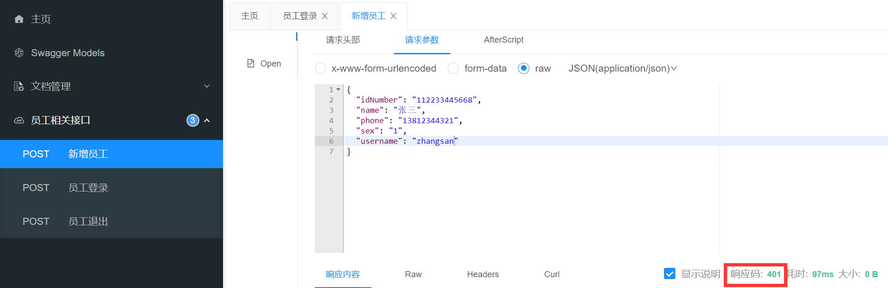
所以我们先在员工登录页面获取一个令牌：
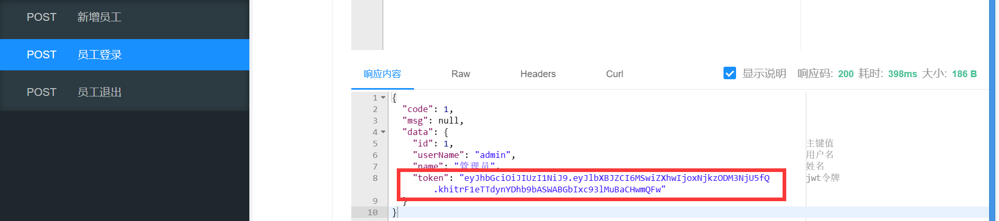
全局参数设置-输入参数名称+参数值，然后关闭页面：
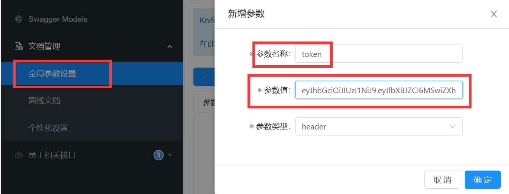
然后带着参数值发送：
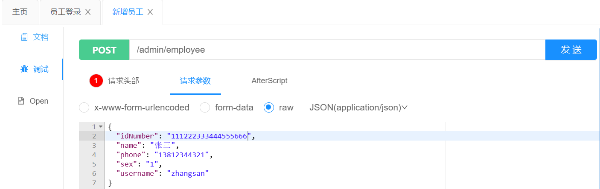
最后可以在数据库查看已经新增成功
问题二
录入的用户名已存在，抛出异常后没有处理，没处理的话，控制台会抛出错误P19。（因为在数据库里面设计的用户名字段是唯一）
用全局的异常处理器sky-server/handler/GlobalExceptionHandler，创建exceptionHandler方法，在方法里添加如下代码：
@ExceptionHandler public Result exceptionHandler (SQLIntegrityConstraintViolationException ex) { String message = ex.getMessage(); if (message.contains("Duplicate entry" )){ String[] split = message.split(" " ); String username = split[2 ]; String msg = username + MessageConstant.ALREADY_EXISTS; return Result.error(msg); }else { return Result.error(MessageConstant.UNKNOWN_ERROR); } }
目的是输出：xxx已经存在的提示。核心思想是：提取错误那段话的第3个词，然后拼接后输出。
效果如图：
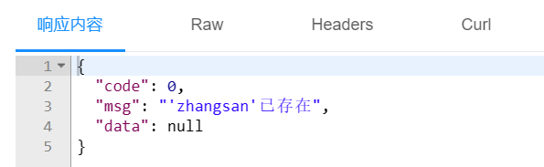
问题三
新增员工时，创建人id和修改人id设置为了固定值P20。程序中将创建者和更新者的id写死为10：
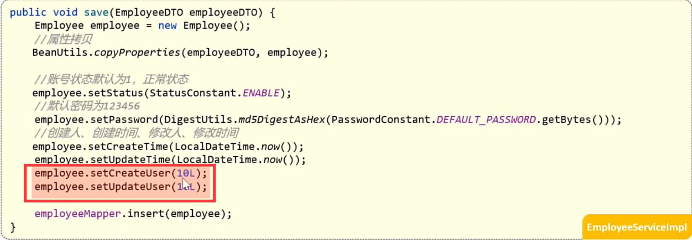
JWT认证机制 ：用户发起请求发送用户名和密码，后端进行校验，如果验证通过就生成JWT Token，将Token返回给客户端，客户端会保存Token，在后续请求的请求头中都会携带JWT Token，请求会被拦截器拦截到，会检查Token，如果通过就会展示数据，如果没有通过就会返回错误信息。
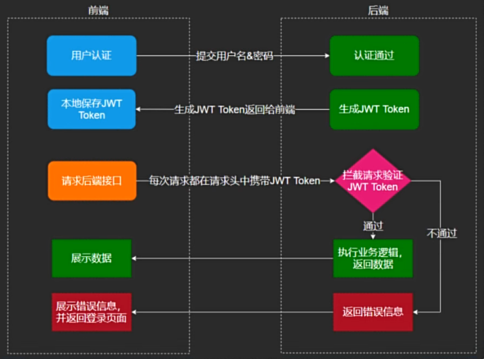
在拦截请求验证的时候可以获得JWT令牌
问题是：在解析出登录员工id后如何传递给Service的save方法？
答：通过ThreadLocal，它是Thread的局部变量，为每个线程提供单独一份的存储空间，具有线程隔离的效果，只有在线程内才能获取到对应的值，在线程外则不能访问。
可以通过在controller、service和拦截器中输出线程的id来看是否单次请求是同一个线程，经实验验证是同一个线程。
System.out.println("当前线程的id:"+Thread.currentThread().getId());
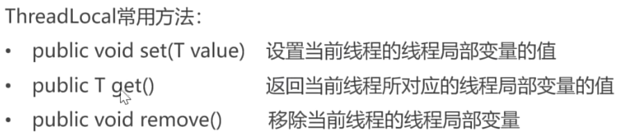
在sky-common/src/main/java/context/BaseContext下封装了ThreadLocal的操作。
先在拦截器JwtTokenAdminInterceptor里将ID存到存储空间里（set），因为每次请求线程不变，所以存储空间的值不会被更改，因此可以在EmployeeServiceImpl类中取到该值（get），进而输出，很妙！
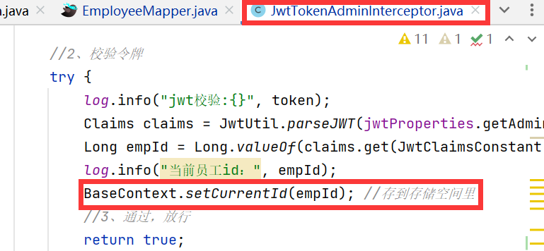
2.分页查询 下面是PageResult和EmployeePageQueryDTO的实体类定义：
@Data @AllArgsConstructor @NoArgsConstructor public class PageResult implements Serializable { private long total; private List records; }
@Data public class EmployeePageQueryDTO implements Serializable { private String name; private int page; private int pageSize; }
在EmployeeService接口中编写方法：
public PageResult PageQuery (EmployeePageQueryDTO employeePageQueryDTO) ;
在EmployeeServiceImpl中实现方法：
@Override public PageResult PageQuery (EmployeePageQueryDTO employeePageQueryDTO) { PageHelper.startPage(employeePageQueryDTO.getPage(),employeePageQueryDTO.getPageSize()); Page<Employee> page = employeeMapper.pageQuery(employeePageQueryDTO); long total = page.getTotal(); List<Employee> result = page.getResult(); return new PageResult (total,result); }
PageHelper的startPage方法可以通过传入的参数自动设置Limit，传入的是页码和每页的记录数，好处是：字符串的拼接不用自己做。底层实现是：它会给ThreadLocal设置上述参数，然后在执行SQL语句时会自动被取出，然后拼接成Limit。
Page是PageHelper插件定义的一个泛型类，是一个固定的返回类型。
pagehelper可以简化分页代码的编写：
<dependency > <groupId > com.github.pagehelper</groupId > <artifactId > pagehelper-spring-boot-starter</artifactId > <version > ${pagehelper}</version > </dependency >
在EmployeeMapper中编写方法：
Page<Employee> pageQuery (EmployeePageQueryDTO employeePageQueryDTO) ;
在application.yml配置文件中扫描了EmployeeMapper.xml配置文件：
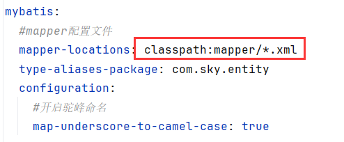
在EmployeeMapper.xml中编写SQL语句，limit不用我们手写，pagehelper会自动帮我们追加拼接，order by是排序条件：
<mapper namespace ="com.sky.mapper.EmployeeMapper" > <select id ="pageQuery" resultType ="com.sky.entity.Employee" > select * from employee <where > <if test ="name != null and name != ''" > and name like concat('%',#{name},'%') </if > </where > order by create_time desc </select > </mapper >
在这里是模糊查询，用concat将name与%进行拼接，%的意思是匹配任意字符串/字符。
标签的id是mapper中的对应方法名。resultType是传入的参数类型。
代码完善，解决时间显示问题
方法一：在Employee实体类中的LocalDateTime属性上加上@JsonFormat注解，格式化时间。
@JsonFormat(pattern = "yyyy-MM-dd HH:mm:ss") private LocalDateTime updateTime;
方法二：拓展Spring MVC的消息转换器，统一对后端返回给前端的数据进行转换处理：（推荐）
在sky-server下的com/sky/config/WebMvcConfiguration下创建：
protected void extendMessageConverters (List<HttpMessageConverter<?>> converters) { MappingJackson2HttpMessageConverter converter = new MappingJackson2HttpMessageConverter (); converter.setObjectMapper(new JacksonObjectMapper ()); converters.add(0 ,converter); }
在JacksonObjectMapper里面有关于日期时间的序列化和反序列化器。
3.启禁账号 {status}是路径参数，1为启用，0为禁用。地址栏传参传入员工id。
操作：传入status和id，将某一id的status从0改为1或从1改为0。
在EmployeeController中编写如下代码：
@PostMapping("/status/{status}") @ApiOperation("启用禁用员工账号") public Result startOrStop (@PathVariable Integer status,Long id) { log.info("启用禁用员工账号：{},{}" ,status,id); employeeService.startOrStop(status,id); return Result.success(); }
取的是路径参数，加注解@PathVariable，如果和路径参数不同名，就要加括号双引号指明取的是哪个路径参数@PathVariable(“status”) ；如果同名，就不用加。
在EmployeeService接口中编入如下代码：
void startOrStop (Integer status, Long id) ;
在EmployeeServiceImpl类中写入如下代码，注意下面的第2种书写方式：
@Override public void startOrStop (Integer status, Long id) { Employee employee = Employee.builder() .status(status) .id(id) .build(); employeeMapper.update(employee); }
在EmployeeMapper中写入如下代码：
void update (Employee employee) ;
在EmployeeMapper.xml中写入如下代码，下面这个代码对全字段都可以进行修改，所以不仅仅适用于对status的修改：
</select> <update id="update" parameterType="Employee" > update employee <set> <if test="name != null" > name = #{name},</if > <if test="username != null" > username = #{username},</if > <if test="password != null" > password = #{password},</if > <if test="phone != null" > phone = #{phone},</if > <if test="sex != null" > sex = #{sex},</if > <if test="idNumber != null" > id_Number = #{idNumber},</if > <if test="updateTime != null" > update_Time = #{updateTime},</if > <if test="updateUser != null" > update_User = #{updateUser},</if > <if test="status != null" > status = #{status},</if > </set> where id = #{id} </update>
4.编辑员工 ①回显数据操作：用查询语句把Employee对象查出来，然后显示。
EmployeeController编写如下代码：
@GetMapping("/{id}") @ApiOperation("根据id查询员工信息") public Result<Employee> getById (@PathVariable Long id) { Employee employee = employeeService.getById(id); return Result.success(employee); }
EmployeeService接口编写如下代码：
Employee getById (Long id) ;
EmployeeServiceImpl实现类编写如下代码：
@Override public Employee getById (Long id) { Employee employee = employeeMapper.getById(id); employee.setPassword("****" ); return employee; }
EmployeeMapper中编写如下代码：
@Select("select * from employee where id = #{id}") Employee getById (Long id) ;
②接收提交的数据：调用之前mapper的update方法进行更新。
EmployeeController编写如下代码：
@PutMapping @ApiOperation("编辑员工信息") public Result update (@RequestBody EmployeeDTO employeeDTO) { log.info("编辑员工信息：{}" ,employeeDTO); employeeService.update(employeeDTO); return Result.success(); }
EmployeeService接口编写如下代码：
void update (EmployeeDTO employeeDTO) ;
EmployeeServiceImpl实现类编写如下代码：
@Override public void update (EmployeeDTO employeeDTO) { Employee employee = new Employee (); BeanUtils.copyProperties(employeeDTO,employee); employee.setUpdateTime(LocalDateTime.now()); employee.setUpdateUser(BaseContext.getCurrentId()); employeeMapper.update(employee); }
EmployeeMapper中编写如下代码：
void update (Employee employee) ;
5.字段填充 在多个业务表中都有公共字段，如create_time、create_user（insert时用到）；update_time，update_user（insert和update时用到）这些。
插入数据的时候需要为这些字段赋值，会有大量重复的冗余set方法代码，后期如果表结构发生变化，代码需要跟着修改，此时就不方便修改（如果后期进行修改要重复一个个进行修改）。
序号 字段名 含义 数据类型 操作类型
1
create_time
创建时间
datetime
insert
2
create_user
创建人id
bigint
insert
3
update_time
修改时间
datetime
insert、update
4
update_user
修改人id
bigint
insert、update
实现思路：自定义注解AutoFill，用于标识需要进行公共字段自动填充的方法。然后自定义切面类AutoFillAspect，统一拦截加入了AutoFill注解的方法，通过反射为公共字段赋值。在Mapper的方法上加入AutoFill注解。
技术点：枚举，注解，AOP，反射。
在com.sky下创建annotation包，创造一个AutoFill的Annotation注解。
@Target(ElementType.METHOD) @Retention(RetentionPolicy.RUNTIME) public @interface AutoFill { OperationType value () ; }
Target注解指定加上什么上面，Retention注解指定什么时候用，
在com.sky下创建aspect包，创建类AutoFillAspect，写入如下代码：
@Aspect @Component @Slf4j public class AutoFillAspect { @Pointcut("execution(* com.sky.mapper.*.*(..)) && @annotation(com.sky.annotation.AutoFill)") public void autoFillPointCut () {} @Before("autoFillPointCut()") public void autoFill (JoinPoint joinPoint) { log.info("开始进行公共字段自动填充..." ); } }
切入点：对哪些类的哪些方法进行拦截。@Pointcut里面写的是对哪些方法进行拦截，要满足2点：①必须是mapper下的所有类的方法，②还要有AutoFill这个注解。
通知：前置通知，后置通知，环绕通知，异常通知。
然后在sky-server下的mapper中的EmployeeMapper类里，insert上加入@AutoFill(value= OperationType.INSERT)注解，update上加入@AutoFill(value= OperationType.UPDATE)注解。
在sky-server的com.sky下的aspect的AutoFillAspect里的log.info(“开始进行公共字段自动填充…”);下添加如下代码：
1.获取到当前被拦截的方法上的数据库操作类型（比如是Insert还是Update，不同的类型需要给不同的参数赋值）
MethodSignature signature = (MethodSignature) joinPoint.getSignature();AutoFill autoFill = signature.getMethod().getAnnotation(AutoFill.class);OperationType operationType = autoFill.value();
2.获取到当前被拦截的方法的参数–实体对象（比如传入的参数是员工还是菜品还是其它的）
Object[] args = joinPoint.getArgs(); if (args == null || args.length==0 ){ return ; } Object entity = args[0 ];
3.准备赋值的数据（给公共字段赋值的数据，比如时间就是系统时间，用户ID是从ThreadLocal获取）
4.根据当前不同的操作类型，为对应的属性通过反射来赋值
LocalDateTime now = LocalDateTime.now();Long currentId = BaseContext.getCurrentId();if (operationType == OperationType.INSERT){ try { Method setCreateTime = entity.getClass().getDeclaredMethod(AutoFillConstant.SET_CREATE_TIME, LocalDateTime.class); Method setCreateUser = entity.getClass().getDeclaredMethod(AutoFillConstant.SET_CREATE_USER, Long.class); Method setUpdateTime = entity.getClass().getDeclaredMethod(AutoFillConstant.SET_UPDATE_TIME, LocalDateTime.class); Method setUpdateUser = entity.getClass().getDeclaredMethod(AutoFillConstant.SET_UPDATE_USER, Long.class); setCreateTime.invoke(entity,now); setCreateUser.invoke(entity,currentId); setUpdateTime.invoke(entity,now); setUpdateUser.invoke(entity,currentId); }catch (Exception e){ e.printStackTrace(); } }else if (operationType == OperationType.UPDATE){ try { Method setUpdateTime = entity.getClass().getDeclaredMethod(AutoFillConstant.SET_UPDATE_TIME, LocalDateTime.class); Method setUpdateUser = entity.getClass().getDeclaredMethod(AutoFillConstant.SET_UPDATE_USER, Long.class); setUpdateTime.invoke(entity, now); setUpdateUser.invoke(entity, currentId); }catch (Exception e){ e.printStackTrace(); } } }
然后要在mapper层的CategoryMapper和EmployeeMapper中的Insert和Update方法上加上@AutoFill注解，注解内容用OperationType.INSERT或OperationType.Update。
最后把service层的那些手动赋值删除掉或者注释掉。
菜品管理 1.新增菜品 在controller下创建一个CommonController，写入如下代码
@RestController @RequestMapping("/admin/common") @Api(tags = "通用接口") @Slf4j public class CommonController { @Value("${sky.upload.local}") private String uploadPath; @PostMapping("/upload") @ApiOperation("文件上传") public Result<String> upload (MultipartFile file) { log.info("文件上传：{}" , file); if (file.isEmpty()) { return Result.error("上传文件不能为空" ); } try { String absolutePath = Paths.get(uploadPath).toAbsolutePath().toString(); File directory = new File (absolutePath); if (!directory.exists()) { directory.mkdirs(); } String originalFilename = file.getOriginalFilename(); String extension = originalFilename.substring(originalFilename.lastIndexOf("." )); String fileName = System.currentTimeMillis() + "_" + UUID.randomUUID().toString().replace("-" , "" ) + extension; String filePath = absolutePath + File.separator + fileName; file.transferTo(new File (filePath)); log.info("文件上传成功，保存路径：{}" , filePath); return Result.success(filePath); } catch (Exception e) { log.error("文件上传失败" , e); return Result.error(MessageConstant.UPLOAD_FAILED); } } }
在sky-server的controller下创建DishController：
@RestController @RequestMapping("/admin/dish") @Api(tags="菜品相关接口") @Slf4j public class DishController { @Autowired private DishService dishService; @PostMapping @ApiOperation("新增菜品") public Result save (@RequestBody DishDTO dishDTO) { log.info("新增菜品：{}" ,dishDTO); dishService.saveWithFlavor(dishDTO); return Result.success(); } }
在sky-server的service下创建DishService：
public interface DishService { public void saveWithFlavor (DishDTO dishDTO) ; }
在sky-server的service的impl下创建DishServiceImpl：
@Service @Slf4j public class DishServiceImpl implements DishService { @Autowired private DishMapper dishMapper; @Autowired private DishFlavorMapper dishFlavorMapper; @Transactional public void saveWithFlavor (DishDTO dishDTO) { Dish dish = new Dish (); BeanUtils.copyProperties(dishDTO,dish); dishMapper.insert(dish); Long dishId = dish.getId(); List<DishFlavor> flavors = dishDTO.getFlavors(); if (flavors != null && flavors.size()>0 ){ flavors.forEach(dishFlavor -> { dishFlavor.setDishId(dishId); }); dishFlavorMapper.insertBatch(flavors); } } }
一个菜品有多个口味数据，向菜品表插入1条数据，向口味表插入n条数据。
因为涉及到多个表，所以添加@Transactional的注解（需要在启动类上添加@EnableTransactionManagement注解）
在sky-server的mapper创建DishMapper类，写入insert方法的代码：
@Mapper public interface DishMapper { @Select("select count(id) from dish where category_id = #{categoryId}") Integer countByCategoryId (Long categoryId) ; void insert (Dish dish) ; }
在sky-server的resources下的mapper下创建DishMapper.xml文件，写入如下代码：
<?xml version="1.0" encoding="UTF-8" ?> <!DOCTYPE mapper PUBLIC "-//mybatis.org//DTD Mapper 3.0//EN" "http://mybatis.org/dtd/mybatis-3-mapper.dtd" > <mapper namespace="com.sky.mapper.DishMapper" > <insert id="insert" > insert into dish (name,category_id,price,image,description,create_time,update_time,create_user,update_user,status) values (#{name},#{categoryId},#{price},#{image},#{description},#{createTime},#{updateTime},#{createUser},#{updateUser},#{status}) </insert> </mapper>
在sky-server的mapper创建DishFlavorMapper类，写入insert方法的代码。
@Mapper public interface DishFlavorMapper { @AutoFill(value= OperationType.INSERT) void insertBatch (List<DishFlavor> flavors) ; }
在sky-server的resources下的mapper下创建DishFlavorMapper.xml文件，写入如下代码。
<?xml version="1.0" encoding="UTF-8" ?> <!DOCTYPE mapper PUBLIC "-//mybatis.org//DTD Mapper 3.0//EN" "http://mybatis.org/dtd/mybatis-3-mapper.dtd" > <mapper namespace="com.sky.mapper.DishFlavorMapper" > <insert id="insertBatch" > insert into dish_flavor (dish_id,name,value) VALUES <foreach collection="flavors" item="df" separator="," > (#{df.dishId},#{df.name},#{df.value}) </foreach> </insert> </mapper>
在DishMapper和DishFlavorMapper中的insert方法上添加@AutoFill(value= OperationType.INSERT)注解。
2.分页查询 在sky-server的controller中已有的DishController类中添加如下代码：
@GetMapping("/page") @ApiOperation("菜品分页查询") public Result<PageResult> page (DishPageQueryDTO dishPageQueryDTO) { log.info("菜品分页查询：{}" ,dishPageQueryDTO); PageResult pageResult = dishService.pageQuery(dishPageQueryDTO); return Result.success(pageResult); }
在sky-server的service中已有的DishService类中添加如下代码：
public PageResult pageQuery (DishPageQueryDTO dishPageQueryDTO) { PageHelper.startPage(dishPageQueryDTO.getPage(),dishPageQueryDTO.getPageSize()); Page<DishVO> page = dishMapper.pageQuery(dishPageQueryDTO); return new PageResult (page.getTotal(),page.getResult()); }
在sky-server的mapper中已有的DishMapper类中添加如下代码：
Page<DishVO> pageQuery (DishPageQueryDTO dishPageQueryDTO) ;
在sky-server的resources下的mapper下已有的DishMapper.xml中写入如下代码：
<select id="pageQuery" resultType="com.sky.vo.DishVO" > select d.* , c.name as categoryName from dish d left outer join category c on d.category_id = c.id <where> <if test="name != null" > and d.name like concat ('%' ,#{name},'%' ) </if > <if test="categoryId != null" > and d.category_id = #{categoryId} </if > <if test="status != null" > and d.status = #{status} </if > </where> </select>
3.删除菜品 批量删除是在地址栏写入要删除菜品的集合。
在sky-server的controller中已有的DishController类中添加如下代码：
@DeleteMapping @ApiOperation("菜品批量删除") public Result delete (@RequestParam List<Long> ids) { log.info("菜品批量删除：{}" ,ids); dishService.deleteBatch(ids); return Result.success(); }
需要加一个注解@RequestParam，可以将地址栏中多个数字参数提取出来然后变成List集合。
在sky-server的service中已有的DishService类中添加如下代码：
void deleteBatch (List<Long> ids) ;
在sky-server的service的Impl中已有的DishServiceImpl类中添加如下代码：
@Transactional public void deleteBatch (List<Long> ids) { for (Long id : ids) { Dish dish = dishMapper.getById(id); if (dish.getStatus()== StatusConstant.ENABLE){ throw new DeletionNotAllowedException (MessageConstant.DISH_ON_SALE); } } List<Long> setmealIds = setmealDishMapper.getSetmealIdsByDishIds(ids); if (setmealIds != null && setmealIds.size()>0 ){ throw new DeletionNotAllowedException (MessageConstant.DISH_BE_RELATED_BY_SETMEAL); } for (Long id : ids) { dishMapper.deleteById(id); dishFlavorMapper.deleteByDishId(id); } }
批量删除用foreach循环来遍历，删除被套餐关联的SQL语句比较复杂。
删除菜品表中的菜品数据这里，每次循环需要执行2次SQL，可能会出现性能问题。应该采用如下的SQL形式：delete from dish where id in (?,?,?)。
在sky-server的mapper中已有的DishMapper类中添加如下代码（负责删除菜品）：
@Delete("delete from dish where id = #{id}") void deleteById (Long id) ;
在sky-server的mapper中创建DishFlavorMapper类中添加如下代码（负责删除关联的口味数据）：
@Delete("delete from dish_flavor where dish_id = #{dishId}") void deleteByDishId (Long dishId) ;
在sky-server的mapper中创建SetmealDishMapper类中添加如下代码（负责查看是否有关联的套餐）：
@Mapper public interface SetmealDishMapper { List<Long> getSetmealIdsByDishIds (List<Long> dishIds) ; }
（上步SQL具体实现）在sky-server的resources的mapper中创建SetmealDishMapper类中添加如下代码（思路是去查询套餐表，看套餐菜品id是否和当前传入的id相同）：
<?xml version="1.0" encoding="UTF-8" ?> <!DOCTYPE mapper PUBLIC "-//mybatis.org//DTD Mapper 3.0//EN" "http://mybatis.org/dtd/mybatis-3-mapper.dtd" > <mapper namespace ="com.sky.mapper.SetmealDishMapper" > <select id ="getSetmealIdsByDishIds" resultType ="java.lang.Long" > select setmeal_id from setmeal_dish where dish_id in <foreach collection ="dishIds" item ="dishId" separator ="," open ="(" close =")" > #{dishId} </foreach > </select > </mapper >
这里比较巧妙的是foreach循环，collection是集合，item是一个个项，separator是分割符号，open是开始符号，close是结束符号。每个元素用逗号分割，然后用大括号括起来。
4.修改菜品 在sky-server的controller中已有的DishController类中添加代码如下：
@GetMapping("/{id}") @ApiOperation("根据id查询菜品") public Result<DishVO> getById (@PathVariable Long id) { log.info("根据id查询菜品：{}" ,id); DishVO dishVO = dishService.getByIdWithFlavor(id); return Result.success(dishVO); }
在sky-server的service中已有的DishService类中添加代码如下：
DishVO getByIdWithFlavor (Long id) ;
在sky-server的service的Impl中已有的DishServiceImpl类中添加代码如下：
public DishVO getByIdWithFlavor (Long id) { Dish dish = dishMapper.getById(id); List<DishFlavor> dishFlavors = dishFlavorMapper.getByDishId(id); DishVO dishVO = new DishVO () ; BeanUtils.copyProperties(dish,dishVO); dishVO.setFlavors(dishFlavors); return dishVO; }
在sky-server的mapper中已有的dishFlavorMapper类中添加代码如下：
@Select("select * from dish_flavor where dish_id=#{dishId}") List<DishFlavor> getByDishId (Long dishId) ;
在sky-server的controller中已有的DishController类中添加代码如下：
@PutMapping @ApiOperation("修改菜品") public Result update (@RequestBody DishDTO dishDTO) { log.info("修改菜品；{}" ,dishDTO); dishService.updateWithFlavor(dishDTO); return Result.success(); }
在sky-server的service中已有的DishService类中添加代码如下：
void updateWithFlavor (DishDTO dishDTO) ;
在sky-server的service的Impl中已有的DishServiceImpl类中添加代码如下：
public void updateWithFlavor (DishDTO dishDTO) { Dish dish = new Dish (); BeanUtils.copyProperties(dishDTO,dish); dishMapper.update(dish); dishFlavorMapper.deleteByDishId(dishDTO.getId()); List<DishFlavor> flavors = dishDTO.getFlavors(); if (flavors != null && flavors.size()>0 ){ flavors.forEach(dishFlavor ->{ dishFlavor.setDishId(dishDTO.getId()); }); } dishFlavorMapper.insertBatch(flavors); }
口味的修改比较麻烦，有可能是删除了再新增，有可能不删除，有可能没删除直接新增。
处理方法：直接把菜品原先关联的口味数据删掉，然后再按照当前传来的口味重新插入数据。
传入DTO不合适，因为DTO里有口味数据，而修改菜品不应该包含口味，所以应该只传入一个Dish数据。
在sky-server的mapper中已有的dishFlavorMapper类中添加代码如下：
@AutoFill(value=OperationType.UPDATE) void update (Dish dish) ;
在sky-server的resources下的mapper中已有的dishFlavorMapper.xml类中添加代码如下：
<update id ="update" > update dish <set > <if test ="name != null" > name = #{name},</if > <if test ="categoryId != null" > category_id = #{categoryId},</if > <if test ="price != null" > price = #{price},</if > <if test ="image != null" > image = #{image},</if > <if test ="description != null" > description = #{description},</if > <if test ="status != null" > status = #{status},</if > <if test ="updateTime != null" > update_Time = #{updateTime},</if > <if test ="updateUser != null" > update_User = #{updateUser},</if > </set > where id = #{id} </update >
这里用的是动态SQL。
套餐管理 1. 新增套餐 1.2.1 DishController
@GetMapping("/list") @ApiOperation("根据分类id查询菜品") public Result<List<Dish>> list (Long categoryId) { List<Dish> list = dishService.list(categoryId); return Result.success(list); }
1.2.2 DishService
List<Dish> list (Long categoryId) ;
1.2.3 DishServiceImpl
public List<Dish> list (Long categoryId) { Dish dish = Dish.builder() .categoryId(categoryId) .status(StatusConstant.ENABLE) .build(); return dishMapper.list(dish); }
1.2.4 DishMapper
List<Dish> list (Dish dish) ;
1.2.5 DishMapper.xml
<select id ="list" resultType ="Dish" parameterType ="Dish" > select * from dish <where > <if test ="name != null" > and name like concat('%',#{name},'%') </if > <if test ="categoryId != null" > and category_id = #{categoryId} </if > <if test ="status != null" > and status = #{status} </if > </where > order by create_time desc </select >
1.2.6 SetmealController
@RestController @RequestMapping("/admin/setmeal") @Api(tags = "套餐相关接口") @Slf4j public class SetmealController { @Autowired private SetmealService setmealService; @PostMapping @ApiOperation("新增套餐") public Result save (@RequestBody SetmealDTO setmealDTO) { setmealService.saveWithDish(setmealDTO); return Result.success(); } }
1.2.7 SetmealService
public interface SetmealService { void saveWithDish (SetmealDTO setmealDTO) ; }
1.2.8 SetmealServiceImpl
@Service @Slf4j public class SetmealServiceImpl implements SetmealService { @Autowired private SetmealMapper setmealMapper; @Autowired private SetmealDishMapper setmealDishMapper; @Autowired private DishMapper dishMapper; @Transactional public void saveWithDish (SetmealDTO setmealDTO) { Setmeal setmeal = new Setmeal (); BeanUtils.copyProperties(setmealDTO, setmeal); setmealMapper.insert(setmeal); Long setmealId = setmeal.getId(); List<SetmealDish> setmealDishes = setmealDTO.getSetmealDishes(); setmealDishes.forEach(setmealDish -> { setmealDish.setSetmealId(setmealId); }); setmealDishMapper.insertBatch(setmealDishes); } }
1.2.9 SetmealMapper
@AutoFill(OperationType.INSERT) void insert (Setmeal setmeal) ;
1.2.10 SetmealMapper.xml
<insert id ="insert" parameterType ="Setmeal" useGeneratedKeys ="true" keyProperty ="id" > insert into setmeal (category_id, name, price, status, description, image, create_time, update_time, create_user, update_user) values (#{categoryId}, #{name}, #{price}, #{status}, #{description}, #{image}, #{createTime}, #{updateTime}, #{createUser}, #{updateUser}) </insert >
1.2.11 SetmealDishMapper
void insertBatch (List<SetmealDish> setmealDishes) ;
1.2.12 SetmealDishMapper.xml
<insert id ="insertBatch" parameterType ="list" > insert into setmeal_dish (setmeal_id,dish_id,name,price,copies) values <foreach collection ="setmealDishes" item ="sd" separator ="," > (#{sd.setmealId},#{sd.dishId},#{sd.name},#{sd.price},#{sd.copies}) </foreach > </insert >
2. 套餐分页查询 2.2.1 SetmealController
@GetMapping("/page") @ApiOperation("分页查询") public Result<PageResult> page (SetmealPageQueryDTO setmealPageQueryDTO) { PageResult pageResult = setmealService.pageQuery(setmealPageQueryDTO); return Result.success(pageResult); }
2.2.2 SetmealService
PageResult pageQuery (SetmealPageQueryDTO setmealPageQueryDTO) ;
2.2.3 SetmealServiceImpl
public PageResult pageQuery (SetmealPageQueryDTO setmealPageQueryDTO) { int pageNum = setmealPageQueryDTO.getPage(); int pageSize = setmealPageQueryDTO.getPageSize(); PageHelper.startPage(pageNum, pageSize); Page<SetmealVO> page = setmealMapper.pageQuery(setmealPageQueryDTO); return new PageResult (page.getTotal(), page.getResult()); }
2.2.4 SetmealMapper
Page<SetmealVO> pageQuery (SetmealPageQueryDTO setmealPageQueryDTO) ;
2.2.5 SetmealMapper.xml
<select id ="pageQuery" resultType ="com.sky.vo.SetmealVO" > select s.*,c.name categoryName from setmeal s left join category c on s.category_id = c.id <where > <if test ="name != null" > and s.name like concat('%',#{name},'%') </if > <if test ="status != null" > and s.status = #{status} </if > <if test ="categoryId != null" > and s.category_id = #{categoryId} </if > </where > order by s.create_time desc </select >
3. 删除套餐 3.2.1 SetmealController
@DeleteMapping @ApiOperation("批量删除套餐") public Result delete (@RequestParam List<Long> ids) { setmealService.deleteBatch(ids); return Result.success(); }
3.2.2 SetmealService
void deleteBatch (List<Long> ids) ;
3.2.3 SetmealServiceImpl
@Transactional public void deleteBatch (List<Long> ids) { ids.forEach(id -> { Setmeal setmeal = setmealMapper.getById(id); if (StatusConstant.ENABLE == setmeal.getStatus()){ throw new DeletionNotAllowedException (MessageConstant.SETMEAL_ON_SALE); } }); ids.forEach(setmealId -> { setmealMapper.deleteById(setmealId); setmealDishMapper.deleteBySetmealId(setmealId); }); }
3.2.4 SetmealMapper
@Select("select * from setmeal where id = #{id}") Setmeal getById (Long id) ; @Delete("delete from setmeal where id = #{id}") void deleteById (Long setmealId) ;
3.2.5 SetmealDishMapper
@Delete("delete from setmeal_dish where setmeal_id = #{setmealId}") void deleteBySetmealId (Long setmealId) ;
4. 修改套餐 4.2.1 SetmealController
@GetMapping("/{id}") @ApiOperation("根据id查询套餐") public Result<SetmealVO> getById (@PathVariable Long id) { SetmealVO setmealVO = setmealService.getByIdWithDish(id); return Result.success(setmealVO); } @PutMapping @ApiOperation("修改套餐") public Result update (@RequestBody SetmealDTO setmealDTO) { setmealService.update(setmealDTO); return Result.success(); }
4.2.2 SetmealService
SetmealVO getByIdWithDish (Long id) ; void update (SetmealDTO setmealDTO) ;
4.2.3 SetmealServiceImpl
public SetmealVO getByIdWithDish (Long id) { Setmeal setmeal = setmealMapper.getById(id); List<SetmealDish> setmealDishes = setmealDishMapper.getBySetmealId(id); SetmealVO setmealVO = new SetmealVO (); BeanUtils.copyProperties(setmeal, setmealVO); setmealVO.setSetmealDishes(setmealDishes); return setmealVO; } @Transactional public void update (SetmealDTO setmealDTO) { Setmeal setmeal = new Setmeal (); BeanUtils.copyProperties(setmealDTO, setmeal); setmealMapper.update(setmeal); Long setmealId = setmealDTO.getId(); setmealDishMapper.deleteBySetmealId(setmealId); List<SetmealDish> setmealDishes = setmealDTO.getSetmealDishes(); setmealDishes.forEach(setmealDish -> { setmealDish.setSetmealId(setmealId); }); setmealDishMapper.insertBatch(setmealDishes); }
4.2.4 SetmealDishMapper
@Select("select * from setmeal_dish where setmeal_id = #{setmealId}") List<SetmealDish> getBySetmealId (Long setmealId) ;
5. 起售停售套餐 5.2.1 SetmealController
@PostMapping("/status/{status}") @ApiOperation("套餐起售停售") public Result startOrStop (@PathVariable Integer status, Long id) { setmealService.startOrStop(status, id); return Result.success(); }
5.2.2 SetmealService
void startOrStop (Integer status, Long id) ;
5.2.3 SetmealServiceImpl
public void startOrStop (Integer status, Long id) { if (status == StatusConstant.ENABLE){ List<Dish> dishList = dishMapper.getBySetmealId(id); if (dishList != null && dishList.size() > 0 ){ dishList.forEach(dish -> { if (StatusConstant.DISABLE == dish.getStatus()){ throw new SetmealEnableFailedException (MessageConstant.SETMEAL_ENABLE_FAILED); } }); } } Setmeal setmeal = Setmeal.builder() .id(id) .status(status) .build(); setmealMapper.update(setmeal); }
5.2.4 DishMapper
@Select("select a.* from dish a left join setmeal_dish b on a.id = b.dish_id where b.setmeal_id = #{setmealId}") List<Dish> getBySetmealId (Long setmealId) ;
三 Redis使用 营业状态 设置营业状态；管理端查询营业状态，用户端查询营业状态（管理端和用户端查询路径不同）。
营业状态存储在Redis中，不用在Mysql中单独创建一张表。
在controller/admin下创建ShopController这个是管理端的，写入如下代码：
@RestController("adminShopController") @RequestMapping("/admin/shop") @Api(tags="店铺相关接口") @Slf4j public class ShopController { public static final String KEY="SHOP_STATUS" ; @Autowired private RedisTemplate redisTemplate; @PutMapping("/{status}") @ApiOperation("设置店铺的营业状态") public Result setStatus ( @PathVariable Integer status) { log.info("设置店铺的营业状态为：{}" ,status==1 ?"营业中" :"打烊中" ); redisTemplate.opsForValue().set("SHOP_STATUS" ,status); return Result.success(); } @GetMapping("/status") @ApiOperation("获取店铺的营业状态") public Result<Integer> getStatus () { Integer status = (Integer) redisTemplate.opsForValue().get(KEY); log.info("获取到店铺的营业状态为：{}" ,status==1 ?"营业中" :"打烊中" ); return Result.success(status); } }
在controller下创建user包，然后把amin的ShopController复制到这个下面，然后进行简单修改，只保留获取状态的。因为有2个类类名相同，会导致Bean冲突，所以我们要在@RestController中指定Bean的名称。
@RestController("userShopController") @RequestMapping("/user/shop") @Api(tags="店铺相关接口") @Slf4j public class ShopController { public static final String KEY="SHOP_STATUS" ; @Autowired private RedisTemplate redisTemplate; @GetMapping("/status") @ApiOperation("获取店铺的营业状态") public Result<Integer> getStatus () { Integer status = (Integer) redisTemplate.opsForValue().get(KEY); log.info("获取到店铺的营业状态为：{}" ,status==1 ?"营业中" :"打烊中" ); return Result.success(status); } }
四 客户端 1 HttpClient 1.1 (HttpClient)介绍 介绍：在Java中通过编码的方式发送HTTP请求。
HttpClient 是Apache Jakarta Common 下的子项目，可以用来提供高效的、最新的、功能丰富的支持 HTTP 协议的客户端编程工具包，并且它支持 HTTP 协议最新的版本和建议。
maven坐标：
<dependency > <groupId > org.apache.httpcomponents</groupId > <artifactId > httpclient</artifactId > <version > 4.5.13</version > </dependency >
1.2 (HttpClient)发GET请求 要保证当前项目已经提前启动好了。
在key-server/src/test/java/com/sky/test下面创建HttpClientTest类然后写入如下代码：
public class HttpClientTest { @Test public void testGET () throws Exception { CloseableHttpClient httpClient = HttpClients.createDefault(); HttpGet httpGet = new HttpGet ("http://localhost:8080/user/shop/status" ); CloseableHttpResponse response = httpClient.execute(httpGet); int statusCode = response.getStatusLine().getStatusCode(); System.out.println("服务端返回的状态码为：" +statusCode); HttpEntity entity = response.getEntity(); String body = EntityUtils.toString(entity); System.out.println("服务端返回的数据为：" +body); response.close(); httpClient.close(); } }
1.3 (HttpClient)发POST请求 要保证当前项目已经提前启动好了。POST需要提前传入参数。
在上一节的HttpClientTest类中写入如下的代码：
@Test public void testPOST () throws Exception{ CloseableHttpClient httpClient = HttpClients.createDefault(); HttpPost httpPost = new HttpPost ("http://localhost:8080/admin/employee/login" ); JSONObject jsonObject = new JSONObject (); jsonObject.put("username" ,"admin" ); jsonObject.put("password" ,"123456" ); StringEntity entity = new StringEntity (jsonObject.toString()); entity.setContentEncoding("utf-8" ); entity.setContentType("application/json" ); httpPost.setEntity(entity); CloseableHttpResponse response = httpClient.execute(httpPost); int statusCode = response.getStatusLine().getStatusCode(); System.out.println("响应码为：" +statusCode); HttpEntity entity1 = response.getEntity(); String body = EntityUtils.toString(entity1); System.out.println("响应数据为：" +body); response.close(); httpClient.close(); }
与Get不同的是，这里添加了登录的参数以及请求编码的方式和数据的格式，其它的基本都是相同的。
这个其实是调用了登录的API，最后会返回一个Token。
2 缓存商品和购物车 2.1 本章内容介绍 菜品和套餐存储在数据库中，如果短期内有大量的人查询会导致数据库压力过大，用户体验不佳。现在把商品数据缓存到Redis中。
加入购物车，查看购物车，可以看到购物车中的商品，可以清空购物车，还可以添加商品到购物车。
缓存菜品 -> 缓存套餐 -> 添加购物车 -> 查看购物车 -> 清空购物车，从购物车中减去某个商品。
2.2 (缓存菜品)设计分析 问题说明：小程序菜品数据是通过数据库获得，如果用户端访问量过大，数据库的压力会增加。
实现思路：通过Redis来缓存菜品数据，减少数据库查询操作。内存操作的性能比磁盘IO性能更高。
每个分类下的菜品保存一份缓存数据。
数据库中菜品数据有变更时要清理缓存数据。
2.3 (缓存菜品)代码开发 在sky-server下的controller/user下的DishController类中写入如下代码：
@RestController("userDishController") @RequestMapping("/user/dish") @Slf4j @Api(tags = "C端-菜品浏览接口") public class DishController { @Autowired private DishService dishService; @Autowired private RedisTemplate redisTemplate; @GetMapping("/list") @ApiOperation("根据分类id查询菜品") public Result<List<DishVO>> list (Long categoryId) { String key = "dish_" + categoryId; List<DishVO> list = (List<DishVO>)redisTemplate.opsForValue().get(key); if (list != null && list.size()>0 ){ return Result.success(list); } Dish dish = new Dish (); dish.setCategoryId(categoryId); dish.setStatus(StatusConstant.ENABLE); list = dishService.listWithFlavor(dish); redisTemplate.opsForValue().set(key,list); return Result.success(list); } }
然后在小程序助手中编译，然后在不同的菜类间切换（比如蜀味烤鱼和蜀味牛蛙），效果是第一次IDEA的控制台会输出SQL语句，然后去看Redis会发现已经有了缓存。然后继续在前面已缓存的菜类间切换，会发现控制台不再输出SQL语句，说明走的是Redis缓存。
2.4 (缓存菜品)清理缓存 不清理可能出现的问题：比如菜品的价格如果被修改，如果继续从Redis从取数据，会导致数据的不一致。
新增菜品、修改菜品、批量删除菜品、起售和停售菜品的时候需要清理缓存。
所以需要在controller下的admin中的DishController中修改代码：
@Autowired private RedisTemplate redisTemplate;
private void cleanCache (String pattern) { Set keys = redisTemplate.keys(pattern); redisTemplate.delete(keys); }
在update、delete方法中调用完service的方法后：
在save方法中调用service的方法后：
String key = "dish_" + dishDTO.getCategoryId();cleanCache(key);
2.5 (缓存菜品)功能测试 首先把所有的菜类都缓存到Redis中（在小程序助手里把所有菜类都点一遍），然后在电脑管理端的前端平台修改某一道菜，然后再看Redis的可视化面板，看看是不是所有的Redis都被清空。
2.6 SpringCache介绍 SpringCache是Spring提供的缓存框架。提供了基于注解的缓存功能。
SpringCache提供了一层抽象，底层可以切换不同的缓存实现（只需要导入不同的Jar包即可），如EHCache，Caffeine，Redis。
注解 说明
@EnableCaching
开启缓存注解功能，通常加在启动类上
@Cacheable
在方法执行前先查询缓存中是否有数据，如果有数据，则直接返回缓存数据；如果没有缓存数据，调用方法并将方法返回值放到缓存中
@CachePut
将方法的返回值放到缓存中
@CacheEvict
将一条或多条数据从缓存中删除
2.7 SpringCache 依赖导入
<dependency > <groupId > org.springframework.boot</groupId > <artifactId > spring-boot-starter-cache</artifactId > </dependency > <dependency > <groupId > org.springframework.boot</groupId > <artifactId > spring-boot-starter-data-redis</artifactId > </dependency >
2.8 SpringCache入门 在启动类上加@EnableCaching
在controller层的UserController下的save方法上写入如下的代码：
@PostMapping @CachePut(cacheNames="userCache",key="#user.id") public User save (@RequestBody User user) { userMapper.insert(user); return user; }
注意key=”#result.id”中的result取的是返回值返回的那个结果。 key=”#user.id”的user取的是传入的参数。p0，a0，root.args[0]表示取的都是第1个参数。
在controller层的UserController下的getById方法上写入如下的代码：
@Cacheable(cacheNames="userCache",key="#id")
然后在方法体的第1行打上断点，点击小虫，然后到localhost:8888/doc.html中对get方法进行测试，发送1，效果是：直接从Redis中返回数据，压根不会触发断点。
现在手动删除id为1的数据，然后重新在doc.html中发送数据，然后会执行断点，放心后控制台输出SQL语句，然后Redis缓存中也有数据。
在controller层的UserController下的deleteById和deleteAll方法上加入如下注解：
@DeleteMapping @CacheEvict(cacheNames = "userCache",key="#id") public void deleteById (Long id) {userMapper.deleteById(id);} @DeleteMapping("/delAll") @CacheEvict(cacheNames="userCache",allEntries = true) public void deleteAll () { userMapper.deleteAll(); }
测试的话可以在两个方法内的第1行打上断点，点击小虫，然后到localhost:8888/doc.html中对delete和deleteAll方法进行测试，先通过getById方法增加几个数据，然后再逐一删除。
可以这么理解cacheNames里的参数就是指定key的名字，只会删除相应的key。
2.9 (缓存套餐)代码开发 首先要在sky-server包下导入下面两个坐标：
<dependency > <groupId > org.springframework.boot</groupId > <artifactId > spring-boot-starter-data-redis</artifactId > </dependency > <dependency > <groupId > org.springframework.boot</groupId > <artifactId > spring-boot-starter-cache</artifactId > </dependency >
然后要在sky-server包下的启动类SkyApplication类上加如下注解：
@EnableCaching
首先是在controller/user包下的SetmealController类中的list方法上加如下注解：
@Cacheable(cacheNames="setmealCache",key="#categoryId")
然后是在controller/admin包下的SetmealController类中的save方法上加如下注解：
@CacheEvict(cacheNames="setmealCache",key="#setmealDTO.categoryId")
最后是在controller/admin包下的SetmealController类中的update、delete、startOrStop方法上加如下注解：
@CacheEvict(cacheNames = "setmealCache",allEntries = true)
2.10 (添购物车) 在sky-server的controller的user中创建一个名为ShoppingCartController类，写入如下代码：
@RestController @RequestMapping("/user/shoppingCart") @Slf4j @Api(tags="C端购物车相关接口") public class ShoppingCartController { @Autowired private ShoppingCartService shoppingCartService; @PostMapping("/add") @ApiOperation("添加购物车") public Result add (@RequestBody ShoppingCartDTO shoppingCartDTO) { log.info("添加购物车，商品信息为：{}" ,shoppingCartDTO); shoppingCartService.addShoppingCart(shoppingCartDTO); return Result.success(); } }
然后在sky-server的service下创建ShoppingCartService类，写入如下代码：
public interface ShoppingCartService { void addShoppingCart (ShoppingCartDTO shoppingCartDTO) ; }
然后在sky-server的service的Impl下创建ShoppingCartServiceImpl类：
@Service @Slf4j public class ShoppingCartServiceImpl implements ShoppingCartService { @Override public void addShoppingCart (ShoppingCartDTO shoppingCartDTO) { } }
完善sky-server的service的Impl下的ShoppingCartServiceImpl类：
@Service @Slf4j public class ShoppingCartServiceImpl implements ShoppingCartService { @Autowired private ShoppingCartMapper shoppingCartMapper; @Override public void addShoppingCart (ShoppingCartDTO shoppingCartDTO) { ShoppingCart shoppingCart = new ShoppingCart (); BeanUtils.copyProperties(shoppingCartDTO,shoppingCart); Long userId = BaseContext.getCurrentId(); shoppingCart.setUserId(userId); List<ShoppingCart> list = shoppingCartMapper.list(shoppingCart); if (list != null && list.size()>0 ) { ShoppingCart cart = list.get(0 ); cart.setNumber(cart.getNumber()+1 ); shoppingCartMapper.updateNumberById(cart); } } }
在sky-server的mapper下的ShoppingCartMapper类中写入如下代码：
@Mapper public interface ShoppingCartMapper { List<ShoppingCart> list (ShoppingCart shoppingCart) ; @Update("update shopping_cart set number = #{number} where id = #{id}") void updateNumberById (ShoppingCart shoppingCart) ; }
在sky-server的resources下的mapper下的ShoppingCartMapper.xml类中写入如下代码：
<?xml version="1.0" encoding="UTF-8" ?> <!DOCTYPE mapper PUBLIC "-//mybatis.org//DTD Mapper 3.0//EN" "http://mybatis.org/dtd/mybatis-3-mapper.dtd" > <mapper namespace="com.sky.mapper.ShoppingCartMapper" > <select id="list" resultType="com.sky.entity.ShoppingCart" > select * from shopping_cart <where> <if test="userId != null" > and user_id = #{userId} </if > <if test="setmealId != null" > and setmeal_id = #{setmealId} </if > <if test="dishId != null" > and dish_id = #{dishId} </if > <if test="dishFlavor != null" > and dish_flavor = #{dishFlavor} </if > </where> </select> </mapper>
完善sky-server的service的Impl下的ShoppingCartServiceImpl类：
@Service @Slf4j public class ShoppingCartServiceImpl implements ShoppingCartService { @Autowired private ShoppingCartMapper shoppingCartMapper; @Autowired private DishMapper dishMapper; @Autowired private SetmealMapper setmealMapper; @Override public void addShoppingCart (ShoppingCartDTO shoppingCartDTO) { ShoppingCart shoppingCart = new ShoppingCart (); BeanUtils.copyProperties(shoppingCartDTO,shoppingCart); Long userId = BaseContext.getCurrentId(); shoppingCart.setUserId(userId); List<ShoppingCart> list = shoppingCartMapper.list(shoppingCart); if (list != null && list.size()>0 ) { ShoppingCart cart = list.get(0 ); cart.setNumber(cart.getNumber()+1 ); shoppingCartMapper.updateNumberById(cart); }else { Long dishId = shoppingCartDTO.getDishId(); if (dishId!=null ){ Dish dish = dishMapper.getById(dishId); shoppingCart.setName(dish.getName()); shoppingCart.setImage(dish.getImage()); shoppingCart.setAmount(dish.getPrice()); }else { Long setmealId = shoppingCartDTO.getSetmealId(); Setmeal setmeal = setmealMapper.getById(setmealId); shoppingCart.setName(setmeal.getName()); shoppingCart.setImage(setmeal.getImage()); shoppingCart.setAmount(setmeal.getPrice()); } shoppingCart.setNumber(1 ); shoppingCart.setCreateTime(LocalDateTime.now()); shoppingCartMapper.insert(shoppingCart); } } }
在shoppingCartMapper中添加insert方法：
@Insert("insert into shopping_cart(name,user_id,dish_id,setmeal_id,dish_flavor,number,amount,image,create_time)" + "value (#{name},#{userId},#{dishId},#{setmealId},#{dishFlavor},#{number},#{amount},#{image},#{createTime})") void insert (ShoppingCart shoppingCart) ;
2.11 查看购物车 在sky-server的controller下的ShoppingCartController类中加入如下代码：
@ApiOperation("查看购物车") @GetMapping("/list") public Result<List<ShoppingCart>> list () { List<ShoppingCart> list = shoppingCartService.showShoppingCart(); return Result.success(list); }
在sky-server的service下的ShoppingCartService类中加入如下代码：
List<ShoppingCart> showShoppingCart () ;
在sky-server的service的Impl下的ShoppingCartServiceImpl类中加入如下代码：
@Override public List<ShoppingCart> showShoppingCart () { Long userId = BaseContext.getCurrentId(); ShoppingCart shoppingCart = ShoppingCart.builder() .userId(userId) .build(); List<ShoppingCart> list = shoppingCartMapper.list(shoppingCart); return list; }
2.12 清空购物车 在sky-server的controller下的ShoppingCartController类中加入如下代码：
@ApiOperation("清空购物车") @DeleteMapping("/clean") public Result clean () { shoppingCartService.clean(); return Result.success(); }
在sky-server的service下的ShoppingCartService类中加入如下代码：
在sky-server的service的Impl下的ShoppingCartServiceImpl类中加入如下代码：
public void clean () { Long userId = BaseContext.getCurrentId(); shoppingCartMapper.deleteByUserId(userId); }
在sky-server的mapper的ShoppingCartMapper类中加入如下代码：
@Delete("delete from shopping_cart where user_id=#{userId}") void deleteByUserId (Long userId) ;